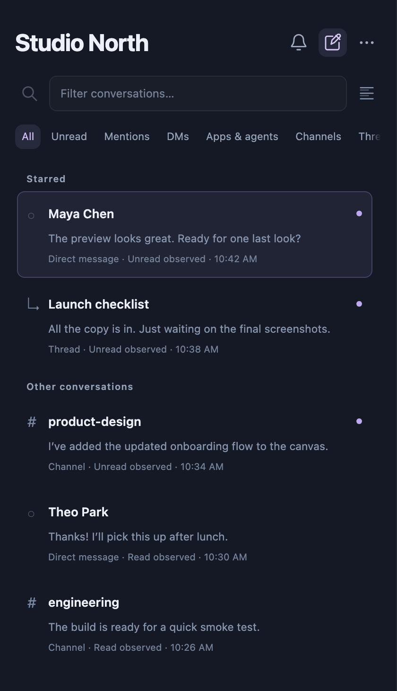
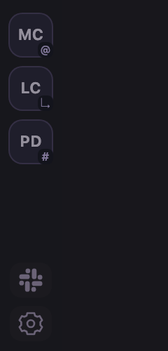
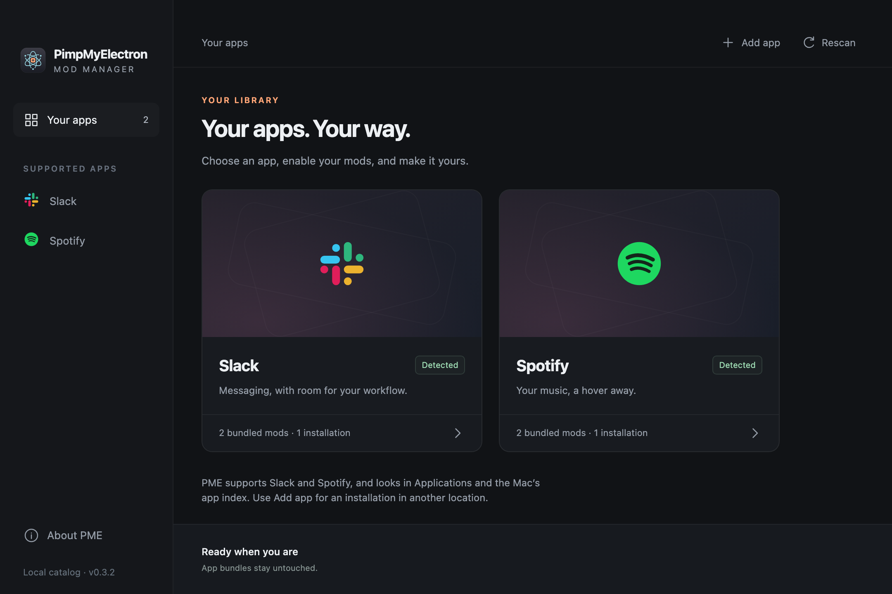

MC
Maya Chen
I’ve added the final screens to the review.
The preview looks great. Ready for one last look?
Keep the tools you use.
Change the way they fit into your day.
PME adds focused mods to the official Slack and Spotify apps. Triage a message, skip a track, then get back to what you were doing.
Apple Silicon · macOS 13.3+ · Free & open source

Actual PME inbox renderer. Fictional demo messages.
A message shouldn’t require a change of scenery. Start at the edge of your screen and open just enough interface to handle what’s next.

The preview looks great. Ready for one last look?
I’ve added the final screens to the review.
The preview looks great. Ready for one last look?
Yes! Pulling it up now.
Everything looks good. Let’s ship it.
DMs, channels, mentions, apps, and threads in an inbox at the edge of your screen. Filter down, open what matters, and keep your place.
A product walkthrough, not a connected Slack session. Inbox and pill screenshots use the current PME renderer with fictional content; hover and conversation panels are illustrations.
J/K to move, Enter to open, X to toggle read state. Search with ⌘K. Escape brings you back.
Slack’s native conversations, threads, and composer open alongside your inbox. Jump to full Slack whenever you need it.
Choose a dock edge, inbox density, accent color, and translucency. Pick which workspaces can get your attention.
PME finds supported apps on your Mac and puts their mods in one place. Choose a combination, launch the official app, and make the setup your own.
Slack and Spotify are supported today.
Independent mods can work together.
Save a launcher to Applications or the Dock.

Four bundled mods, two supported apps. No separate mod marketplace or account to manage.
An edge-docked inbox, previews, quick replies, and keyboard navigation.
SlackQuote a message into the current composer. No new thread required.
SpotifyPlayback, artwork, search, your library, and queue in a menu-bar widget.
SpotifyPause for selected apps’ camera use. Resume only if the mod paused it.
PME is an independent, open-source project. Here’s what that means in practice.
Build with us ↗No. PME launches the official installed app with your selected mods. Slack handles sign-in, conversations, and sending. The signed app bundle stays untouched on disk.
The default observer uses Slack’s existing cache and traffic, without additional background API polling. Its view is limited to what it has observed. Opening native Slack content can fetch messages and mark them read normally.
Mods run trusted code inside authenticated apps and depend on private interfaces that can change. PME’s everyday launch uses private local connections rather than an open debugging port. Spotify controls use macOS Automation; Camera Pause uses local camera-activity diagnostics, not camera recording. Review the source and your organization’s policies before use.
An Apple Silicon Mac running macOS 13.3 or later, plus the official Slack or Spotify app. Release builds are signed and notarized and bundle their runtime. You don’t need Node or a compiler. Intel Macs, Windows, and Linux are not supported by the client today.
Yes. The source is licensed under MPL 2.0. The catalog records per-mod platform compatibility. Start with the contributor guide and existing adapters; support for an arbitrary Electron app is not automatic.
Install PME. Choose a mod. Keep doing your thing.